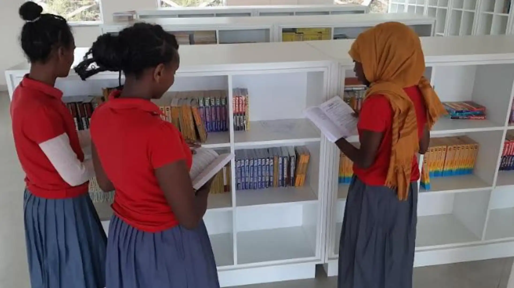
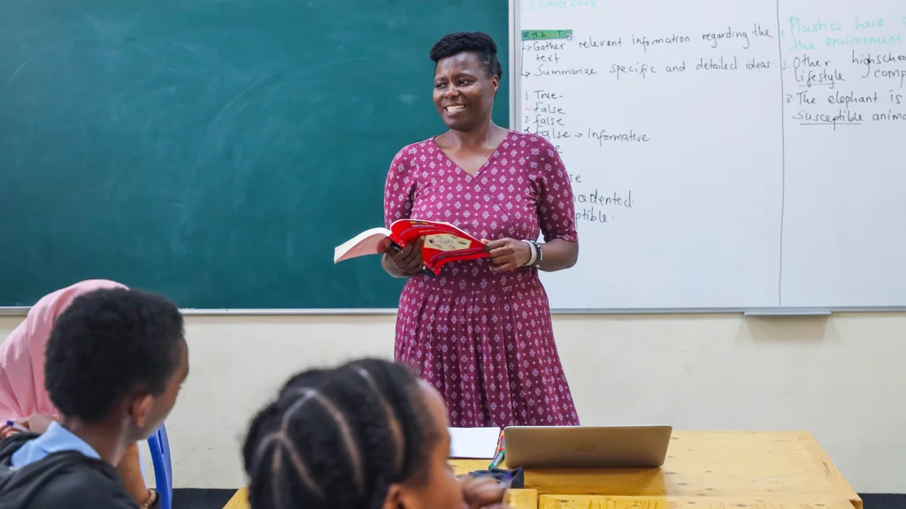
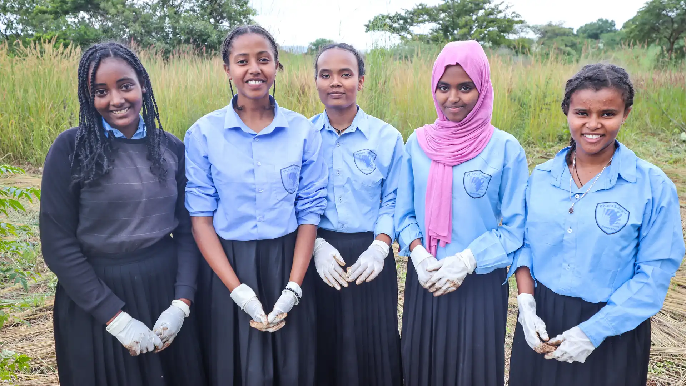

Our Curriculum
Pharo School Homosha follows the new Ethiopian education curriculum for
all grades 9 to 12 as guided by the Ministry of Education and adopts
aspects of international education into the teaching and learning. The
students sit for post-Grade 12 Ethiopian national examinations. The
curriculum is enriched by clubs like Model UN, Science, Technology,
Engineering and Maths, Moot court etc, not only to boost academic outcomes
but also to nurture confidence and critical thinking.

Our subjects by years
Grade 9 and 10 take 12 subjects(10 Mandatory subjects):
- English
- Math
- Physics
- Chemitry
- Biology
- Geography
- History
- Citizen Education(CE)
- Information Technology(IT)
And 2 optional subjects:
- Amharic
- Health and physical Education(HPE)

Grade 11 and 12 SOCIAL SCIENCES Stream students - 6 General
Subjects:
- English
- Mathematics
- Geography
- History
- Economics
- IT(Information Technology)
Grade 11 and 12 NATURAL SCIENCES Stream students - 7 General
Subjects:
- English
- Mathematics
- Physics
- Chemistry
- Biology
- IT(Information Technology)
- Agriculture

Results
In 2022, 38% (10 out of 26) students scored 50 and above in the national exam.
And in 2023, 66% (33 out of 50) students scored 50 and above in the national
exam. Most recently, in 2024, 100% of students scored 50 and above in the
national exam.
Furthermore, the eligibility criteria in Ethiopia have been lowered by up to 30%,
allowing candidates who meet this threshold to receive a placement. In 2022, 23
out of 26 Homosha students joined different Ethiopian universities. In 2023, 50
out of 50 joined universities, 4 of whom joined international universities.
| Pass mark |
| Year |
Homosha School |
BGRS |
Ethiopia |
| 2022 |
38% |
1.4% |
3.3% |
| 2023 |
66% |
1.7% |
3.2% |
Female pass mark |
| Year |
Homosha School |
BGRS |
Ethiopia |
| 2022 |
38% |
1% |
2.3% |
| 2023 |
66% |
1.7% |
2.2% |
Eligible for University |
| Year |
Homosha School |
BGRS |
Ethiopia |
| 2022 |
88.4% |
0.26% |
25% |
| 2023 |
100% |
0.02% |
23% |
Standout students:
2022
2023
-
Mulualem Kidane Melese - 88.3% top 15 in Ethiopia and 2nd place in the
region
- Awunsese Wodisha Habtie - 81.5% 3rd place in the region
2024
- Simret Yaynu Weldariyam - 80.66%
- Hikma Hussen Endris - 76.66%